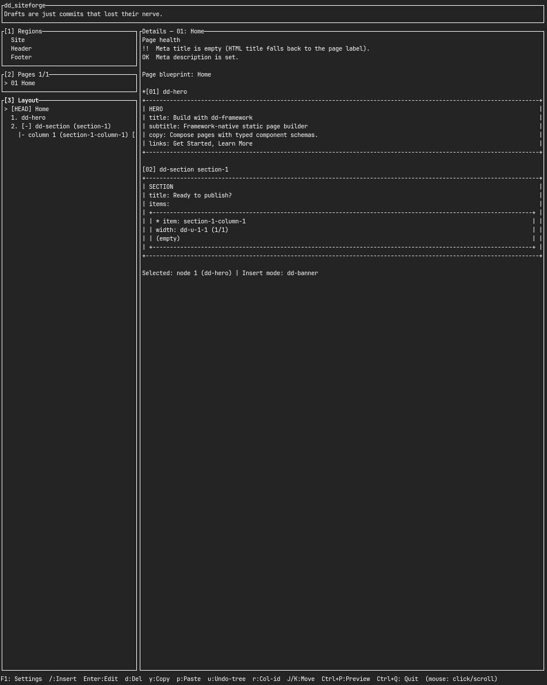
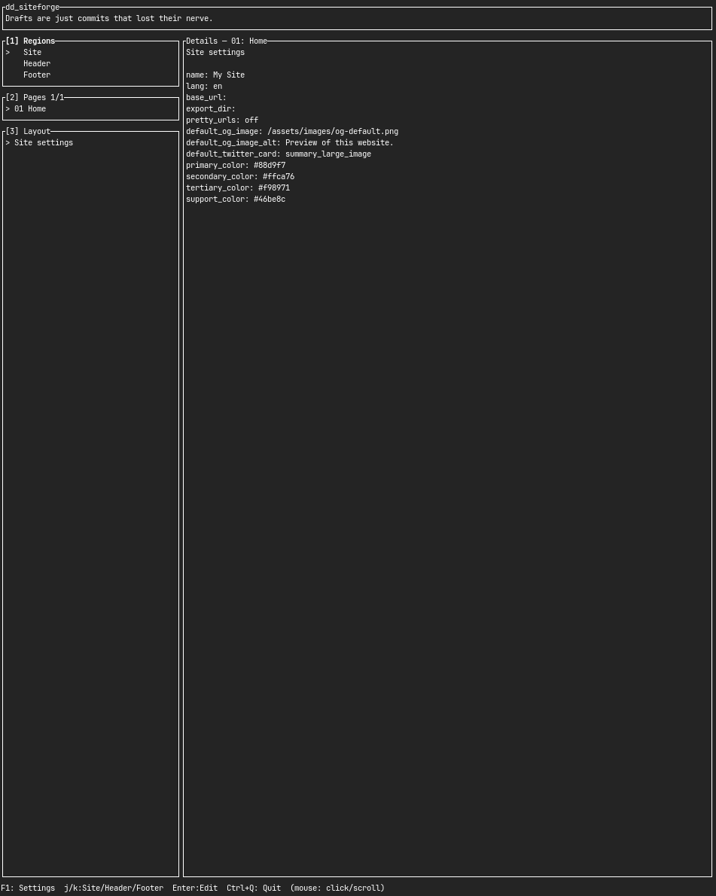
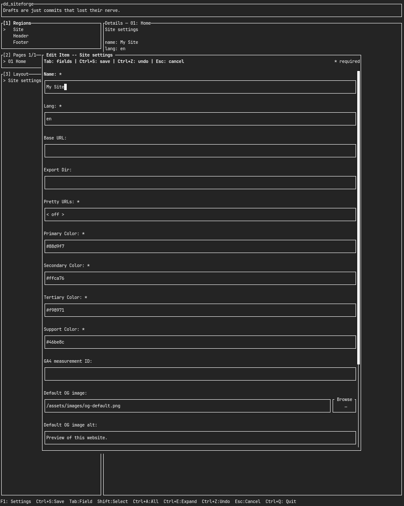
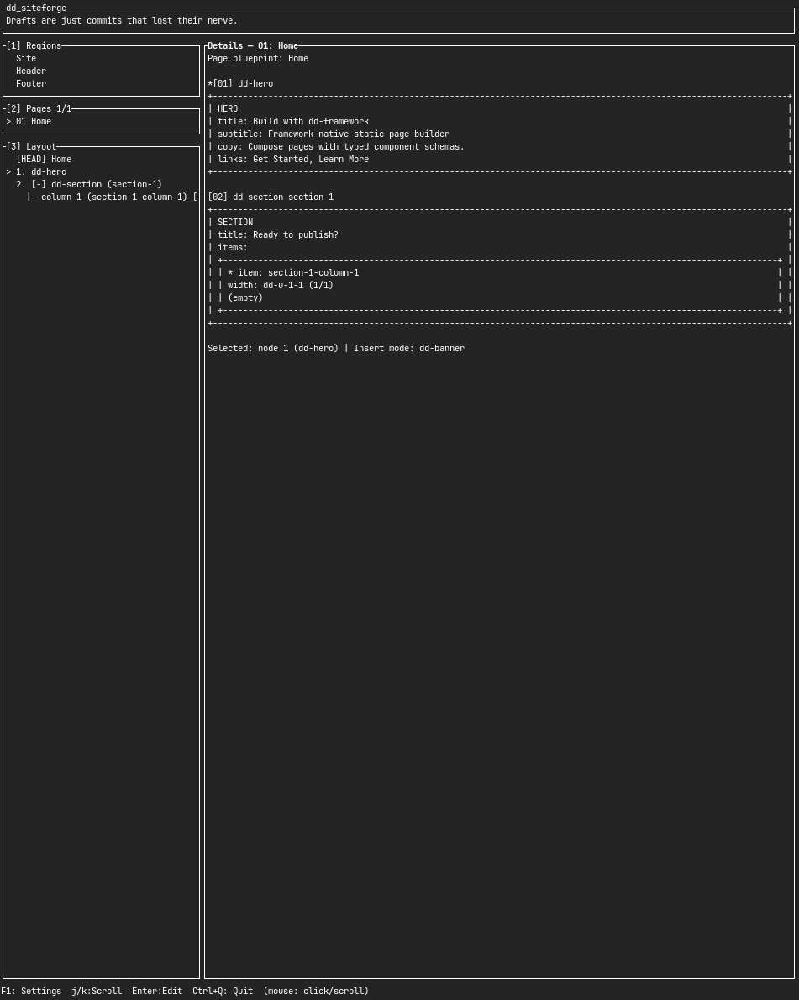
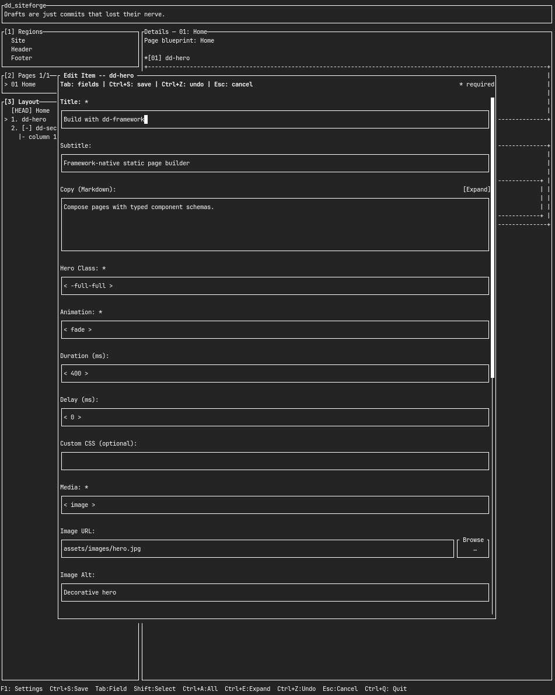
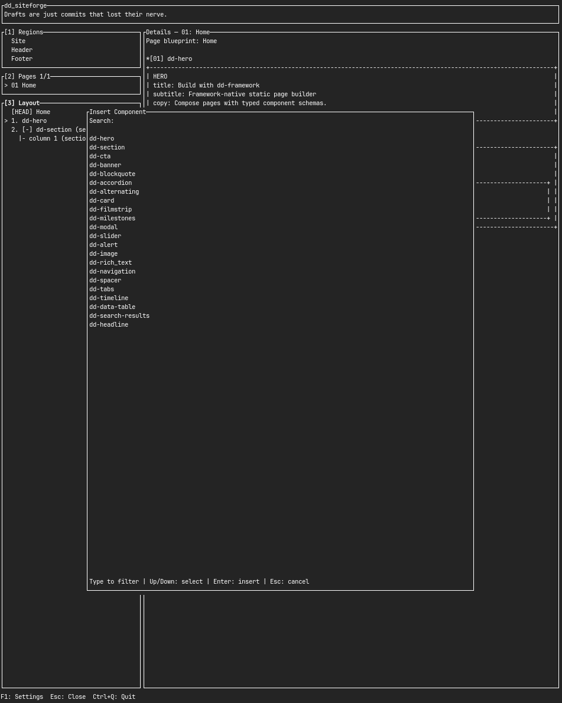
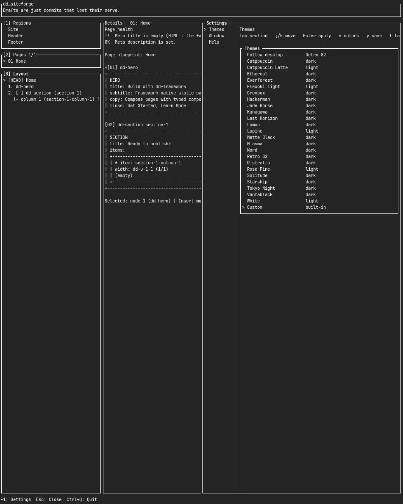
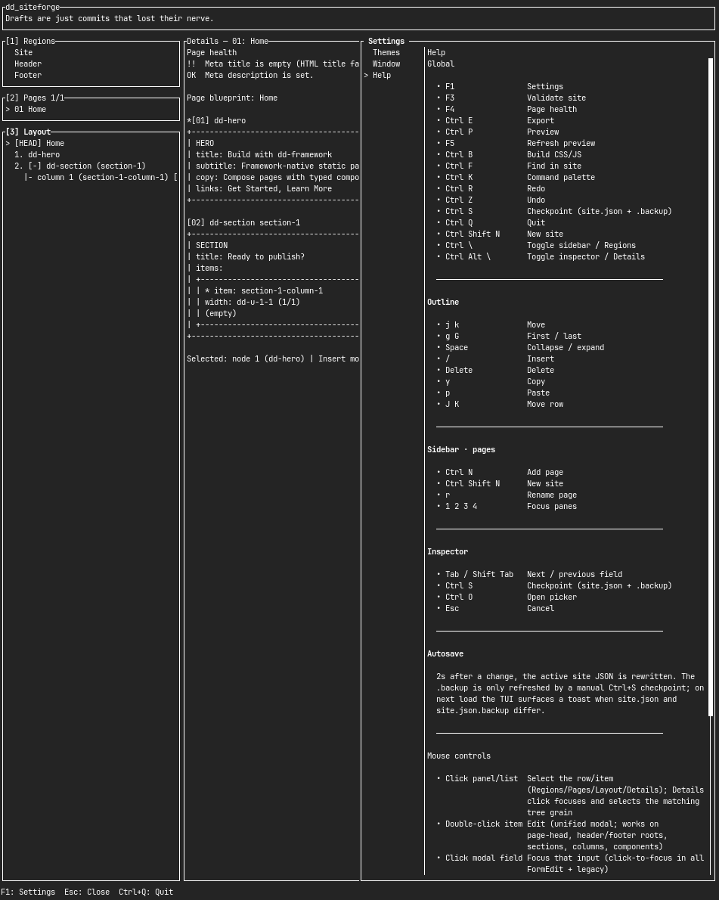

What it is
You author a marketing site (roughly 5–20 pages, one editor) as JSON. The TUI edits that tree. Export writes static HTML plus CSS/JS from a Grunt build. There is no database, no multi-user CMS, and no server after export.
Workflow: init-site → drop images in source/images/ → TUI → npx grunt build → export or preview.
Install
The installer detects Linux or macOS and x86_64 or aarch64, then downloads that binary from GitHub Releases. You do not need Rust for this path. Node.js is still required later for CSS/JS.
curl -fsSL https://raw.githubusercontent.com/ldnddev/dd_siteforge/master/install.sh | bashInstalls $HOME/.local/bin/dd_siteforge and copies the default theme to $HOME/.config/ldnddev/dd_siteforge_theme.yml only if that file is not already there. On Linux it also writes ~/.local/share/applications/dd_siteforge.desktop (Terminal=true) so the TUI shows in the application menu. Override with PREFIX, BIN_DIR, CONFIG_DIR, or XDG_DATA_HOME. Pin a release with --version v1.33.1.
# pin / uninstall (piped)
curl -fsSL https://raw.githubusercontent.com/ldnddev/dd_siteforge/master/install.sh | bash -s -- --version v1.33.1
curl -fsSL https://raw.githubusercontent.com/ldnddev/dd_siteforge/master/install.sh | bash -s -- uninstall
# from a clone
./install.sh # cargo build --release
./install.sh --from-release # download instead of building
cargo install --path . # ~/.cargo/bin
./install.sh uninstallConfirm:
dd_siteforge --version
# dd_siteforge 1.33.1Create a site
Pick an empty folder. init-site writes site.json, seeds Handlebars into source/templates/, and copies the Grunt / source/ / Lando / DDEV kit next to the JSON. Existing files are skipped.
mkdir my-site && cd my-site
dd_siteforge init-site site.json --name my-siteWithout --name it prompts (or uses the folder name when stdin is not a TTY). Put author images in source/images/ (URLs in the TUI look like assets/images/hero.jpg).
CSS / JS
When the site has .lando.yml, the TUI Ctrl+B runs lando grunt build (Lando owns Node). Otherwise it runs npx grunt build. Host Node still works from a shell.
lando start
lando npm install
lando grunt build # or in the TUI: Ctrl+BWrites web/assets/{css,js,fonts}. npx grunt dev rebuilds on change. DDEV remains an optional wrapper: ddev start then ddev npm run build.
The editor
dd_siteforgeIn a folder with site.json that opens the TUI. dd_siteforge site.json and dd_siteforge tui site.json still work. With no JSON, a picker lists recents or creates a starter. Last page and tree row restore from ~/.config/ldnddev/dd_siteforge/session.json.
Autosave rewrites the JSON 2s after a change. Ctrl+S also writes a site.json.backup checkpoint. Ctrl+F finds copy in the site, Ctrl+K opens the command palette, F4 is page health. Ctrl+Q quits (confirms if dirty).

init-site. The header is the product name. The footer starts with F1: Settings at 80 columns and wider, and F1:Settings below that. It ends with Ctrl+Q: Quit, or ^Q:Quit on a narrow line. Layout is focused; Details shows the page blueprint.Panes
| Key | Pane | What it is |
|---|---|---|
| 1 | Regions | Site settings, Header, Footer |
| 2 | Pages | Sitemap order. Ctrl+N add, r rename |
| 3 | Layout | Tree for the current region. Enter edit, / insert |
| 4 | Details | ASCII blueprint. j/k scroll; click selects |
Tab / Shift+Tab still move between pages, not panes.



Edit a component
In Layout, j/k to a row and press Enter (or double-click). Tab between fields. Left/Right cycles enums. Ctrl+S saves; Esc cancels. In a URL field, Ctrl+P opens an image picker (source/images/) or a page picker.

dd-hero. The modal footer says Ctrl+S: save. Enter is a newline in textareas, not save.Insert a component
/ opens a fuzzy picker. Allowed kinds follow the focused region: pages can insert hero/section/components; header can insert header-search/menu; footer cannot insert a hero.

Settings
F1, F2, Ctrl+/, and Ctrl+, toggle one Settings sheet on the right half of the body. It opens on Themes. Tab and Shift+Tab, or [ and ], move Themes, then Window, then Help. Click a name in the sheet list to jump. The sheet sits above an open form and does not drop a paused image picker.

Window is Density (comfortable or compact) and Vim keys. Enter toggles the highlighted row. Those prefs are stored in ~/.config/ldnddev/dd_siteforge/gui.json (under $XDG_CONFIG_HOME when that variable is set).

Validate, export, preview
dd_siteforge validate-site site.json
npx grunt build
dd_siteforge export-html site.json ./web/
dd_siteforge serve site.json # export + http://127.0.0.1:8765/
Inside the TUI: F3 validate, Ctrl+E export (prompts for a directory the first time, then remembers export_dir), Ctrl+P export + local HTTP + open the current page in a browser.
Export copies Grunt web/assets (css, js, fonts, favicon, vendors) unless the destination is already that tree. It fills missing fonts from source/fonts and favicons from source/favicon, copies source/images/ to web/assets/images/, and writes sitemap.xml, search-index.json, robots.txt, and 404.html when you have no author 404 page.
assets/images/… file is missing next to the JSON.
Theme
First file found wins:
./dd_siteforge_theme.yml(project)$XDG_CONFIG_HOME/ldnddev/dd_siteforge_theme.ymlwhen that variable is set, otherwise~/.config/ldnddev/dd_siteforge_theme.yml- Built-in defaults
Must declare version: 1. Token names are in LDNDDEV_TUI_VISUAL_STANDARD.md. Optional header_quotes replaces the rotating header line (picked once per launch).
Cheatsheet
| Keys | Action |
|---|---|
| F1 F2 Ctrl+/ Ctrl+, | Toggle Settings (Themes, Window, Help) |
| F3 | Validate |
| Ctrl+E / Ctrl+P / Ctrl+S | Export / Preview / Save (+ backup) |
| / | Insert component |
| 1 2 3 4 | Focus Regions / Pages / Layout / Details |
| Tab | Next page |
| Ctrl+Q | Quit |
| Ctrl+N Shift+X r | Pages: add / delete / rename |
| j k Enter d y p u | Layout: move / edit / delete / copy / paste / undo |
| Ctrl+S in a form | Save the form (Esc cancels) |
The footer is one adaptive line. Below 80 columns it starts with F1:Settings and ends with ^Q:Quit. At 80 and wider it starts with F1: Settings and ends with Ctrl+Q: Quit. Hints in the middle drop until the line fits. Help is the full list.
Other CLI
init-templates writes bundled Handlebars into source/templates/ in the current directory. Pass a site JSON path only when the site lives elsewhere.
dd_siteforge init-templates [--force] [--name dd-hero]
dd_siteforge init-scaffold site.json [--force] [--name my-site]
dd_siteforge init-scaffold --global # house overlay in ~/.config/ldnddev/dd_siteforge/
dd_siteforge show-site site.jsonUpdating these screenshots
PNGs live in docs/images/. Names are a contract with this page. The full procedure is SCREENSHOTS.md.
On Hyprland (foot + grim + wtype):
cargo build --release
./docs/capture.shThat seeds a throwaway site under /tmp/dd_siteforge_tutorial/, pins the header quote, drives the TUI through the table in SCREENSHOTS.md, and overwrites the eight PNGs. Inspect them, then:
git add docs/images/*.png
git commit -m "docs: refresh tutorial screenshots"Do not commit site.json or the /tmp scratch site. Manual capture: 132×42 terminal, same key sequence, window-only screenshot, same filenames.